论文阅读十五：随机自回归视觉生成
摘要
这篇文章提出用于视觉生成的随机自回归模型（RAR），在图像生成任务上达到最先进的性能，同时保持与语言模型框架完全兼容。提出的RAR很简单：在具有下一个标记预测目标的标准自回归训练过程中，输入序列（通常以栅格形式排序）以概率 r 随机排列为不同的分解顺序，其中 r 从 1 开始并在训练过程中线性衰减为 0。这种退火训练策略使模型能够学习最大化所有分解顺序的预期似然，从而有效提高模型建模双向上下文的能力。重要的是，RAR保留自回归建模框架的完整性，确保与语言建模完全兼容，同时极大改善图像生成的性能。在ImageNet-256基准，RAR取得1.48的FID分数，不仅超越先前的现金自回归图像生成器，还优于领先的基于扩散和基于掩码transformer的方法。代码和模型在： https://github.com/bytedance/1d-tokenizer 。
引言
近年来，自回归（AR）模型已经显著驱动自然语言处理和计算机视觉任务的进展。在语言建模领域，它们作为大型语言模型（LLMs）的基础框架，如GPT、Llama和Gemini，以及其他先进模型。在计算机视觉领域，自回归模型已经显示巨大潜力，在他想生成任务中提供了可匹配扩散模型或非自回归transformers的性能。更重要的是，自回归建模正在成为跨多种模态和任务的统一模型的有前景的方式。
尽管自回归模型在语言建模中占据主导，相较于扩散模型或非自回归transformer，在视觉生成任务中，它们通常产生次优表现。这种差异可归因于文本和视觉信号之间的固有差异。文本高度紧凑，语义上有意义，而视觉数据往往更低级和冗余，这使得双向上下文建模变得更加关键。例如，几项研究表明，与视觉任务中的双向注意力相比，应用于图像表征的因果注意力会导致较差的表现。
为解决这个问题，近期的工作已经尝试通过重新设计自回归公式来重新引入双向机制，在图像生成中取得先进结果。然而，这些方法往往偏离了传统的自回归范式。例如，VAR[58]从下一个标记预测转移到下一个尺度预测，在每个尺度内实现双向注意力，MAR[36]将MaskGITstyle框架[10]推广到自回归定义，这自然引入了双向注意力。虽然有效，但这些修改使它们与通用transformer架构的集成变得复杂，通用transformer架构旨在统一不同的模态，被证明与传统的自回归建模配合得很好[55,56]。
本文中，我们旨在增强自回归图像模型的生成质量，同时保留核心自回归架构，保持与语言建模框架的兼容。具体地，我们在自回归transformer中通过最大化所有可能的分解顺序的预期似然来实现双向上下文学习。这种方式，所有标记将会在所有可能的上下文下训练和预测，促进学习双向表示。而且，我们引入了置换概率r，用于控制随机分解顺序和标准栅格顺序的训练数据的比列。初始时，r设置为1（完全随即分解），在训练过程中它线性衰减到0，逐步将模型恢复到其他自回归图像生成器常用的栅格顺序。
为此，我们提出一个简单、高效和可缩放的自回归模型训练方案，称为随机自回归建模（RAR）。RAR保留原始自回归模型架构和公式，确保与语言建模完全兼容。同时，它显著改善了自回归模型的生成质量，不需要额外成本。在ImageNet-256基准，RAR取得1.48的FID分数，如图1所示，其性能明显优于之前最先进的自回归图像生成器。通过解决单向上下文建模的局限性，RAR代表了迈向自回归视觉生成的关键一步，并为该领域的进一步发展开辟了新的可能性。
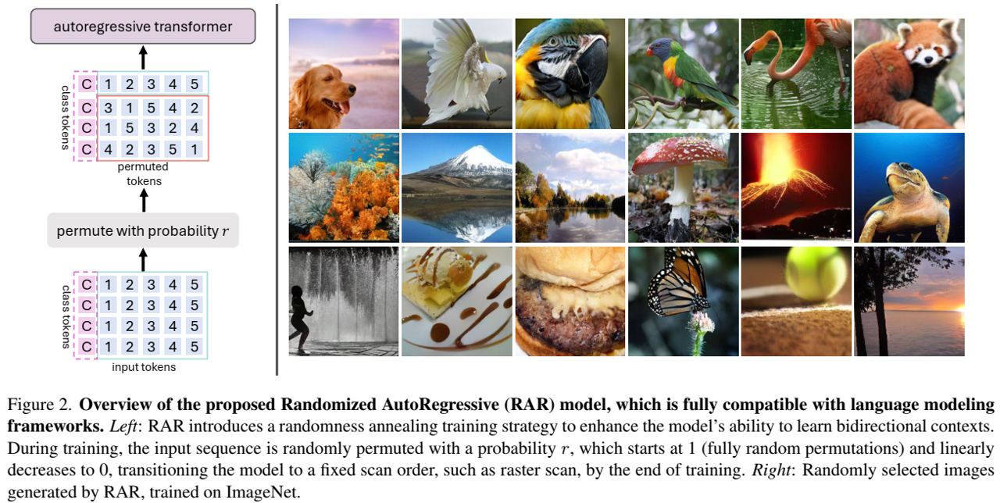
相关工作
自回归语言建模。 自回归语言建模的发展已经为通用AI系统铺平一个有前景的路径。这些模型的核心是简单但强大的下一个标记预测范式，其中目标是基于前面的输入预测序列中的下一个单词或标记。这种方法既展现了可扩展性（由缩放定律证明），又通过零样本泛化展现了多功能性，从而能够超越传统语言任务探索多种模式。
自回归视觉建模。 自回归视觉建模的开创性研究侧重于将图像表示为像素序列。然而，受自回归语言建模进展的启发，随后的研究浪潮已经转向将图像建模为离散值标记序列，从而显著提高了性能。通过 [39, 52] 的努力，这一方向被进一步探索，旨在提高标记质量，并利用最初为语言任务开发的现代自回归架构。然而，所有这些工作严格遵守栅格扫描顺序来处理像素或标记，导致单项信息流，这对于视觉建模时次优的。在这项工作中，我们转而探索所有可能的因式分解顺序的学习，以增强双向上下文学习，同时保留核心的自回归框架。
其他视觉生成模型。 除了自回归视觉建模，还有大量努力探索其他形式的视觉生成模型，包括生成对抗网络（GANs）、扩散模型、掩码transformers、缩放感知自回归建模（VAR）和使用扩散损失的掩码自回归建模（MAR）。值得注意的是，还尝试了一种类似于所提出的RAR的基于随机顺序的AR框架。然而，正如我们的实验所示（见第4.2节），简单地用随机顺序替换栅格顺序只会带来微小的改善，这与[36]中的观察结果相吻合。这进一步证明了随机退火策略在RAR中的重要性，从而为AR图像生成器带来了实质性的改进。
方法
在本节中，我们首先在第3.1节中概述了自回归建模，然后在第3.2节中提出了随机自回归建模（RAR）。
背景
我们提供具有下一个标记预测目标的随机建模的简要概述。给定离散标记序列 ，自回归建模的目标是在前向自回归分解下最大化序列的可能性。具体地，目标是最大化基于所有以前标记 预测当前标记 的联合概率：
其中， 表示标记分布预测器，其模型由 参数化。
如方程所示，每个位置t的标记 仅以之前的标记为条件，限制上下文建模到单向方式。这与像掩码transformer和扩散模型的方法形成对比，后者可以在训练时间利用双向上下文。此外，虽然自然语言由固有的序列顺序（大多数语言中从左到右），图像数据缺少一个清晰的预先规定的顺序来处理标记。在图像生成的可能顺序中，以行为主的排序（如，栅格扫描）是最被广泛接收的，已经证明相较于其他候选者的性能优越。
RAR：随机自回归模型
视觉信号固有地表现出双向相关性，因此有效的全局上下文建模至关重要。然而，传统自回归模型依赖于因果注意力掩码，其强制了对标记序列的单向依赖，与视觉数据相矛盾，如先前工作所指出的，对于视觉模态双向注意力明显比因果注意力好。而且，没有通用的“正确”方式来排列图像标记到一个因果序列。虽然广泛接收的栅格顺序已经取得一些成功，它在自回归训练过程中引入了偏差。例如，每个标记仅以扫描顺序前面标记为条件，限制模型学习其他方向关系的能力。
为解决这个挑战，我们提出随机自回归建模方法，其将优化目标与双向上下文相结合：
不同于BERT风格或MaskGIT风格的方法，我们的方法遵循置换目标（permuted objective）方法，其中模型以自回归方式在所有可能的分解顺序中训练。这使得模型能够收集双向上下文，同时在预期中保持自回归框架。形式上，我们有：
其中， 表示索引序列 所有可能的排列的集合， 表示来自 的随机采样排列。 符号 表示置换序列中的第t个元素， 表示 之前所有的位置。由于模型参数 在所有采样分解顺序中共享，每个标记 暴露于每个可能的上下文，在训练中学习与每个其他标记 的关系。这允许模型有效捕捉双向上下文，同时保持自回归形式的完整性。
虽然简单，这种修改显著改进图像生成性能，突出了双向上下文在改进自回归图像生成器能力方面的作用。我们的发现也与NLP语言建模的自回归训练中观察到的结果一致。
讨论。 虽然置换目标允许在预期的自回归框架中，进行双向上下文学习，它仍难以在生成过程中全部捕捉“全局上下文”。这是因为总有一些标记在其他标记之前生成，无法访问全局上下文。这种限制不是自回归模型独有的，还表现在非自回归模型中。重采样或细化[28,42]等技术可以通过确保每个标记都在足够的上下文中生成来帮助解决这个问题。然而，这种设计可能将系统复杂化；因此，探索这种方案在本文范围之外，留待未来。
目标感知位置嵌入。置换训练目标的一个局限性是，在某些情况下，标准的位置嵌入可能会失败。例如，考虑两个不同的排列： 和 （即，仅最后两个标记的位置被交换）。当预测倒数第二个标记时，两个排列都将产生同样的特征，因此相同的预测逻辑，即便它们对应于不同的真是标签（即， 对于两种排列 和 是一样的）。这个问题，在一般随机自回归训练过程，超越了这个具体的例子，可能在除了最后一个以外的所有标记位置发生（由于最后一个不需要预测下一个标记）。为解决这个问题，我们引入一组额外的位置嵌入，我们称之为目标感知位置嵌入。这些嵌入对下一个要预测哪个标记的信息进行编码。
形式上，我们定义一组目标感知位置嵌入 。将与下一个标记相关的位置嵌入加到当前嵌标记嵌入，从而得到目标感知标记嵌入 :
其中， 和 分别是是x和 相对于排列 的置换标记。通过将目标标记的位置嵌入与下一个标记预测相关联，每个标记预测都知道目标标记的索引，从而减轻了置换目标中的潜在混淆。
请注意，我们忽略了最后标记 的目标感知位置嵌入，因为它不参与损失计算，且没有预测目标。该概念的可视化说明见图3。另一个值得注意的是，目标感知位置嵌入可以在训练完成后与原始位置嵌入拼接，因为我们的方法最终退火到一个固定的栅格扫描，因此没有在推理阶段增加参数或计算。
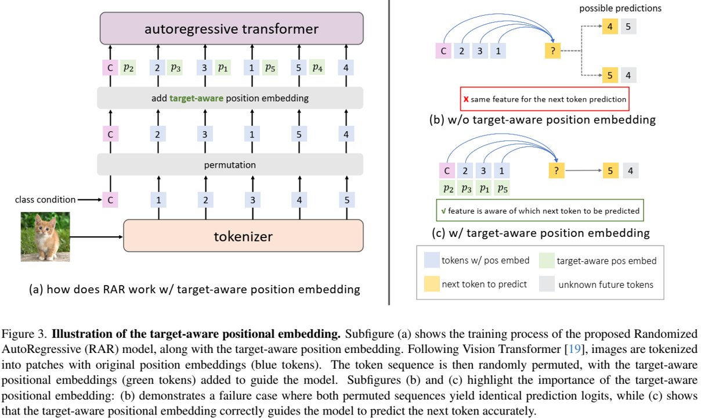
随即退火。虽然提出的具有置换的随机自回归训练使得模型能够在单向框架中捕捉双向上下文，它可能为视觉生成引入次优行为，由于两个主要因素：（1）可能的排列数量是巨大的，潜在地导致模型侧重学习如何处理不同置换顺序而不是提升生成质量。例如，对于一个长度为256的标记序列，可能的排列数量是 256! > ，这可能使得模型不堪重负，降低训练效率。 (2) 虽然图像可以以任意顺序处理，特定扫描顺序趋于优于其他的。例如，[22]评估六种不同的扫描顺序（以行为主、螺旋进、螺旋出、z曲线、子样本和交替），并发现以行为主（即，栅格顺序）持续表现最好，结果使得它称为最广泛使用得视觉生成顺序。
为解决这个问题，我们提出随机退火，一种策略旨在平衡排列随机性和栅格顺序得已知有效性。该方法引入单一参数 r ，其控制使用随机置换和栅格顺序得概率。在训练开始， ，意味着模型完全使用随即置换。在训练过程中， r 线性衰减为0，在训练的结束将模型转换为栅格顺序。具体地，我们定义r的训练计划表，由两个超参数 和 控制，表示训练回合中r开始退火和退火结束。形式上，我们有：
其中， 是当前训练回合。我们将在实验中消融超参数 和 。
该计划允许模型初始探索各种随机置换，以获得更好的双向表示学习，最后收敛到更加高效的以行为主的扫描顺序，从而获得更好的视觉生成质量，这已经被其他典型最回归方法[22]使用。值得注意的是，这种策略不仅改进生成性能，还保留了与先前工作中使用的标准扫描顺序的兼容性。
实验结果
本节中，我们在章节4.1介绍我们方法的实现细节。接下来，我们在章节4.2展示关键设计选择的消融研究。主要结果在章节4.3中讨论，接着是缩放研究和可视化。
实现细节
我们在语言建模自回归框架的基础上实现了RAR，并进行了最小的更改。
VQ分词器 按照先前工作[10,22]，使用VQ分词器将输入图像标记化位离散标记序列，我们使用具有ImageNet上训练的官方权重的MaskGIT-VQGAN[10]。该分词器是纯粹基于CNN的分词器，将 的图像标记化为256个离散化标记（即，下采样因子为16），码本大小（即词汇大小）为1024。
自回归Transformer 我们使用不同模型配置[74]的视觉transformer[19]，包括RAR-S(133M)、RAR-B（261M）、RAR-L（461M）、RAR-XL（955M）和RAR-XXL（1499M）。对于所有这些变体，我们在自注意力模块应用因果注意力掩码和QK LayerNorm[15]来稳定大规模模型训练。我们对所有消融研究使用普通ViT来加速实验，我们用adaLN[45]对最终模型进行了增强。详细的架构配置和模型大小见表1。
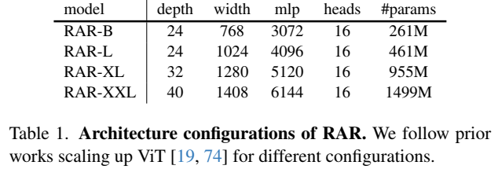
位置嵌入 我们对ViT中原始位置嵌入和目标感知位置嵌入使用可学习的嵌入。请注意，随着我们的模型在训练完成之后退火到基于栅格顺序的自回归图像生成，这两种位置嵌入可以组合为1个，使其与传统自回归图像生成器相同。
数据集 我们在ImageNet-1K训练集上训练我们的模型，它包含1000目标类的128.1167万训练图像。我们使用MaskGIT-VQGAN分词器[10]预标记整个训练集来加速训练。对于消融研究，我们仅使用中心裁剪和水平翻转增强对数据集进行预标记，同时我们通过最终模型的十裁剪变换[52,53]进一步增强预标记数据集的多样性。
训练协议 我们对于所有模型变体使用同样的训练超参数。模型使用批量大小2048训练400回合（250k步）。学习率在前100个回合（预热）将从0线性增长到 ，然后它将按照余弦衰减表逐渐衰减到 。我们使用AdamW[33,38]优化器，beta1 为0.9， beta2为0.96，权重衰减为0.03。我们使用最大梯度范数1.0执行梯度裁剪。训练中，类条件将会以0.1的概率丢弃。消融研究和所有RAR模型变体的主要结果的训练设置保持不变。
采样协议 我们采样50000张图像，使用来自[18]的评估代码进行FID计算。我们不使用任何基于top-k或top-p的过滤技术。我们还按照先前工作[11,25,73]使用无分类引导[30]。消融研究中，我们使用较为简单的线性引导计划[11]，对于最终模型，我们使用改进的功率余弦引导计划[25]。每个模型变体的最终详细超参数可以在附录中找到。
消融研究
我们研究RAR的不同配置，包括随机退火策略和RAR收敛的扫描顺序。
随机退火策略 在表2中，我们比较了不同的随机退火策略。我们采用线性衰减计划，并通过改变两个超参数start和end来关注随机化退火何时开始和结束，如方程式（5）所定义。对于持续400个epoch的训练，我们每100个epoch枚举所有可能的组合。例如，当start=200和end=300时，模型用0到200个迭代周期的随机排列和300到400个迭代周期中的栅格顺序进行训练。在200到300个历元期间，该模型通过概率为r的随机置换和概率为1-r的栅格顺序进行训练，其中r的计算如方程式（5）所示。值得注意的是，当start=end=0时，模型是用纯栅格顺序训练的，即标准的自回归训练。当start=end=400时，模型总是用随机置换的输入序列进行训练。这两种情况都是所提出的随机退火的重要基线，它们分别达到了3.08和3.01的FID分数。有趣的是，我们观察到所有其他变体都比这两个基线有了实质性的改善。例如，即使简单地用随机置换替换栅格顺序的前100个周期，它（即开始=100，结束=100）也会将FID提高0.6到2.48。此外，我们还注意到，该模型更倾向于保留一些用于纯随机置换训练的开始纪元和一些用于更好地适应栅格扫描顺序的最后纪元，这通常会导致比其他变体更好的性能。所有结果表明，由于改进了双向表示学习过程，添加具有置换目标的随机自回归训练有利于自回归视觉生成器，并提高了FID得分。
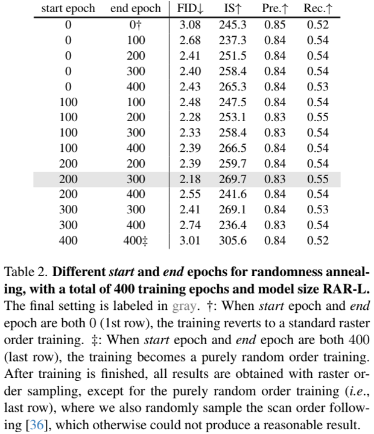
此外，在所有变体中，我们发现start=200和end=300的情况效果最好，这将基线（纯栅格顺序）FID从3.08提高到2.18。该策略在随机置换顺序的训练上分配了更多的计算，并专注于最后100个迭代周期的纯栅格顺序。因此，我们默认对所有RAR模型采用这种退火策略。
栅格外的不同扫描顺序 尽管行主顺序（即栅格扫描）是视觉生成中事实上的扫描顺序，但与其他扫描顺序相比，它的优劣缺乏系统研究。我们注意到，该研究[22]在4年前进行了一项类似的研究。然而，考虑到生成模型近年来取得的重大进展，值得重新审视这一结论。具体来说，我们考虑了RAR可能收敛到的6种不同的扫描顺序（行主、螺旋入、螺旋出、z曲线、子样本和替代）。我们没有将训练损失和验证损失作为比较指标[22]进行报告，而是直接评估它们的生成性能。表3总结了结果。有趣的是，我们观察到所有变体都获得了相当好的分数，这表明RAR能够处理不同的扫描顺序。考虑到行主扫描（栅格扫描）仍然比其他扫描顺序具有优势，因此我们对所有最终的RAR模型都使用栅格扫描顺序。
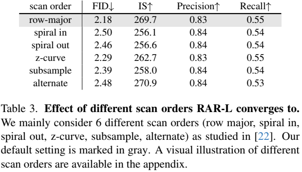
主要结果
我们报告了ImageNet-1K 256×256基准上最先进的图像生成器的RAR结果[16]。
如表4所示，与之前的AR图像生成器相比，RAR的性能明显更好。具体来说，仅具有261M参数的最紧凑的RAR-B的FID得分为1.95，已经显著优于当前最先进的AR图像生成器LlamaGen-3B-384（3.1B，FID 2.18，裁剪尺寸384）[52]和Open-MAGVIT2-XL（1.5B，FID2.33）[39]，同时分别使用了91%和81%的模型参数。它还超越了广泛使用的扩散模型，如DiTXL/2（FID 1.95对2.27）和SiT XL（FID 1.95对2.06），而与它们相比，只使用了39%的模型参数。
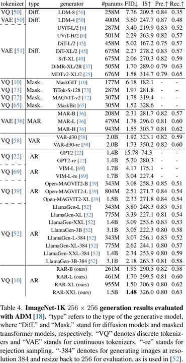
在表4中，我们进一步探讨了不同模型大小（从261M到1.5B）下的RAR，我们观察到强大的可扩展性行为，随着模型大小的增加，性能持续提高。值得注意的是，最大的变体RARXXL在ImageNet基准测试中取得了最新的最先进的结果，FID得分为1.48。与其他两种最近的方法VAR[58]和MAR[36]相比，RAR不仅表现出更优的性能（RAR的FID为1.48，VAR为1.73，MAR为1.55），而且整个框架与语言建模兼容，因此更便于将大型语言模型的成熟优化和加速技术应用于视觉生成[52]。
此外，RAR在不同框架中表现出比最先进的可视化生成器更优越的性能。它在领先的自回归模型、扩散模型和掩码transformers模型中表现更好，分别超过了LlamaGen-3B-384[52]、MDTv2 XL/2[25]和MaskBit[65]（RAR的FID为1.48，LlamaGen为2.18，MDTv2为1.58，MaskBit为1.52）。据我们所知，这是第一次语言建模风格自回归可视化生成器超越先进的扩散模型和掩码transformer模型。
采样速度 AR方法的一个关键优势是它们能够利用LLM中已建立的优化技术，如KV缓存。在表5中，我们将RAR的采样速度（以图像/秒为单位测量）与其他类型的生成模型进行了比较，如扩散模型[45]、掩码transformers[65,73]、VAR[58]和MAR[36]。其中，AR模型（RAR）和VAR-d30模型与KV缓存优化兼容，在生成速度方面比其他方法具有显著优势。如表5所示，RAR取得了最先进的FID分数，同时也取得了显著超过其他方法的生成速度。例如，在FID得分约为1.5时，MaskBit[65]和MAR-H[36]分别以每秒0.7和0.3幅图像的速度生成图像样本。相比之下，RAR-XL不仅获得了更好的FID分数，而且每秒可以生成8.3个高质量的视觉样本——比MaskBit快11.9倍，比MAR-H快27.7倍。最大的RAR变体RAR-XXL在保持显著速度优势的同时，进一步提高了FID分率，比MaskBit快9.1倍，比MAR-H快21.3倍。此外，RAR可能会从vLLM等LLM优化技术中进一步受益[34]，正如其他AR方法所见[52]。
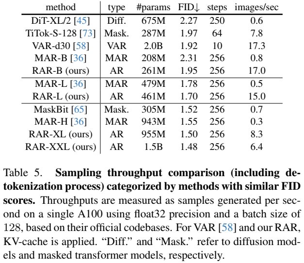
缩放行为。我们研究了RAR的缩放行为。具体来说，我们在图4中绘制了训练损失曲线和FID得分曲线（有和没有无分类器引导[30]）。如图所示，我们观察到RAR在不同模型大小下具有良好的扩展性，其中较大的模型大小会导致持续较低的训练损失和更好的FID分数，无论是否使用无分类器引导的增强。我们注意到，由于RAR保持了AR公式和框架的完整性，它也从AR方法中继承了可扩展性。
可视化。我们在图5中可视化了不同RAR变体生成的样本，这表明RAR能够生成具有高保真度和多样性的高质量样本。附录中提供了更多的可视化。
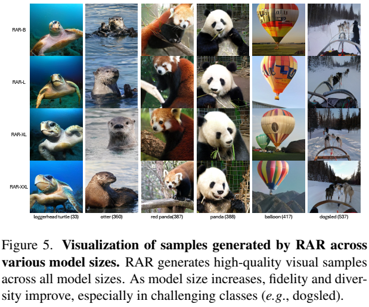
结论
本文介绍了一种简单而有效的策略，以提高语言建模兼容的自回归图像生成器的视觉生成质量。通过采用随机置换目标，我们的方法在保持自回归结构的同时，实现了改进的双向上下文学习。因此，所提出的RAR模型不仅超越了之前最先进的自回归图像生成模型，而且优于领先的非自回归transformer和扩散模型。我们希望这项研究有助于将自回归transformers推向一个统一的视觉理解和生成框架。
最终RAR模型的超参数
我们在表6中列出了所有RAR模型的详细训练超参数和采样超参数。
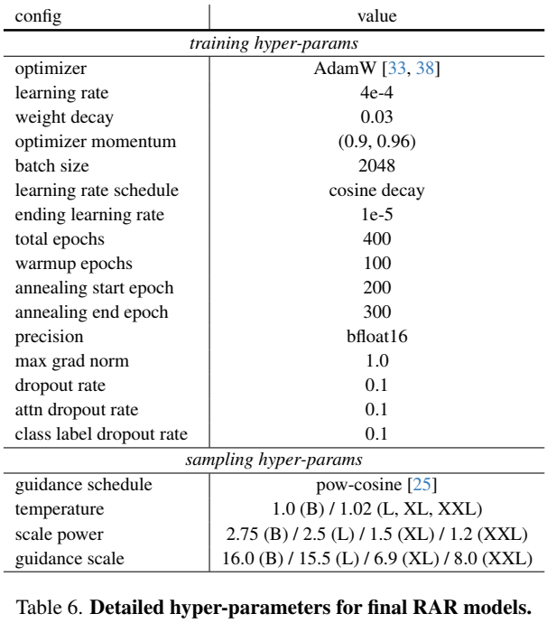
RAR 伪代码
我们在算法1中提供PyTorch风格的简单RAR伪代码。
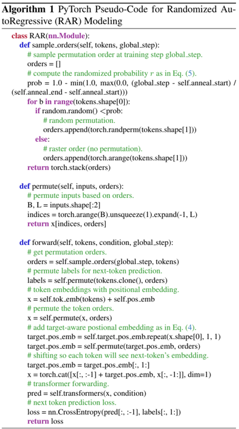
扫描顺序的可视化
我们在图6中可视化了主论文（表3）中研究的6个扫描顺序。
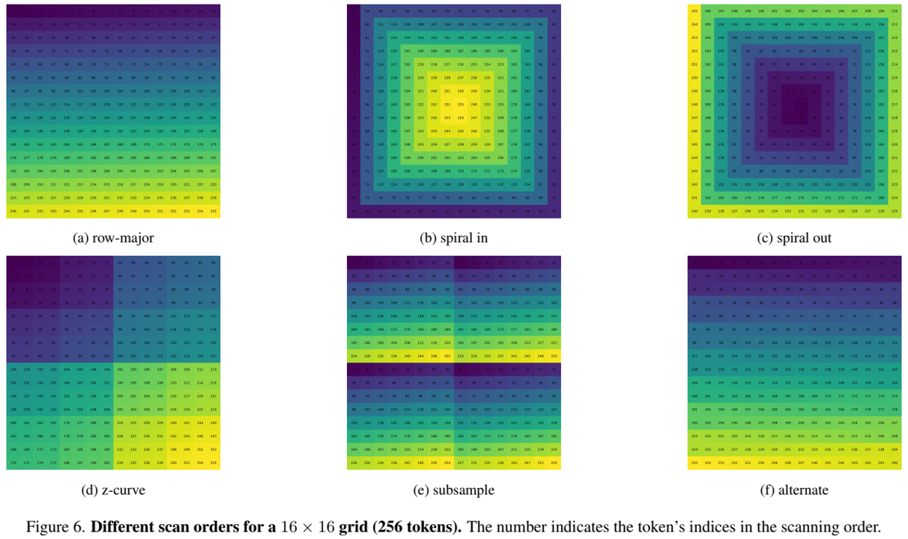